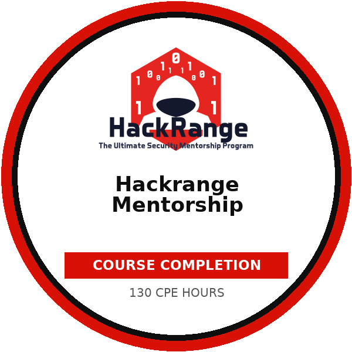

Bachelor of Information Technology
Avance International University · Uganda
Information Technology Student | Cybersecurity & Security Operations
I’m an Information Technology student developing practical cybersecurity capability through structured learning, hands-on labs and security projects. My current focus areas are security operations, identity and access management, enterprise IT, security awareness and the foundations of AI security.
I’m developing a strong technical foundation and documenting the process so that my work is transparent, reproducible and useful to others.
Avance International University · Uganda
Building toward security operations and, over time, deeper specialisation in AI security engineering.
Selected work from my practical learning journey. Each case study separates the problem, configuration, decisions, evidence and lessons learned.
A security automation project exploring monitoring, security workflows and response concepts. Built as part of the EcoTechLabs project portfolio.
View repository ↗An educational RBAC simulator for experimenting with users, roles, permissions, access decisions and basic audit events. A work in progress, not a production IAM platform.
View repository ↗A Microsoft Entra ID homelab built around a fictional seven-person company. The exercise covered user lifecycle setup, department attributes, security-group design and membership, enterprise application configuration, and individual user assignment. It also records a tenant-plan limitation affecting group-based application assignment. This is a documented learning lab, not a production deployment.
Loading the original Microsoft Entra screenshots from the evidence archive…
These are captured Microsoft Entra admin-center screenshots from the lab. The archive is stored in this repository; the gallery extracts and displays the original images in the browser.
Download original screenshot evidence ↗ Practical configuration · Evidence gallery · Lessons learnedThis portfolio is being developed into a record of practical labs, technical notes, project milestones and lessons learned.
Explore GitHub ↗Practical exercises covering identity, access control, Windows and Linux administration, networking and security fundamentals. Lab write-ups will be added as they are completed.
Documentation in progressAreas I’m actively studying and practising. This list reflects learning focus, not a claim of expert-level proficiency.
Participating in structured cybersecurity mentorship and practical learning, exploring identity and access management, OAuth, SSO, tokens, MFA, shadow IT, data loss prevention and shadow AI. The programme also includes incident-response tabletop preparation and applied security discussions.
Supported cybersecurity awareness and training activities, with exposure to CTF-based learning and security concepts including insider-threat awareness and data protection.
Working in a fintech business-process operations environment while pursuing an IT degree and developing a longer-term career path in cybersecurity.
Worked across digital content production, marketing and team coordination.
Structured mentorship complements my independent labs with guided discussions, practical exercises and peer learning.
Completed the HackRange Mentorship course, with a course-completion badge recognising 130 CPE hours. The programme strengthened my learning across identity and access management, OAuth, SSO, tokens, MFA, shadow IT, data loss prevention, shadow AI and incident-response tabletop preparation.
Course completion badge received · Formal certificate expected

Selected completed learning credentials. Additional training and certificates will be added with verified titles and links.
Coursera · 2026
Cisco Networking Academy
I’m open to connecting with cybersecurity professionals, mentors and teams working on practical security challenges and learning opportunities.